This document outlines the creation of Gold Layer KPI tables from Silver Layer dimension and fact tables for business analytics.
punit_dbx.silver tablespunit_dbx.goldPurpose: Measure customer retention and churn rates
-- Temporary view for repeated customers
CREATE OR REPLACE TEMPORARY VIEW repeated_cust AS (
WITH cte AS (
SELECT DISTINCT customer_id, dd.year
FROM punit_dbx.silver.fact_orders_details fos
JOIN punit_dbx.silver.dim_date dd ON fos.date_id = dd.date_id
),
cte2 AS (
SELECT *,
LAG(year) OVER(PARTITION BY customer_id ORDER BY year) AS lag_year
FROM cte
)
SELECT * FROM cte2 WHERE year = lag_year + 1
);
-- All customers by year
CREATE OR REPLACE TEMPORARY VIEW all_cust AS (
SELECT DISTINCT customer_id, dd.year
FROM punit_dbx.silver.fact_orders_details fos
JOIN punit_dbx.silver.dim_date dd ON fos.date_id = dd.date_id
);
-- Final retention rate table
CREATE OR REPLACE TABLE punit_dbx.gold.cust_return_rate AS (
WITH cte_cnt_repeated AS (
SELECT year, COUNT(*) AS repeated_cnt
FROM repeated_cust
GROUP BY year
),
cte_cnt_all AS (
SELECT year, COUNT(*) AS all_cnt
FROM all_cust
GROUP BY year
)
SELECT cca.year,
ROUND((100 * ccr.repeated_cnt) / cca.all_cnt, 2) AS repeated_percentage
FROM cte_cnt_repeated ccr
RIGHT JOIN cte_cnt_all cca ON ccr.year = cca.year
ORDER BY year
);
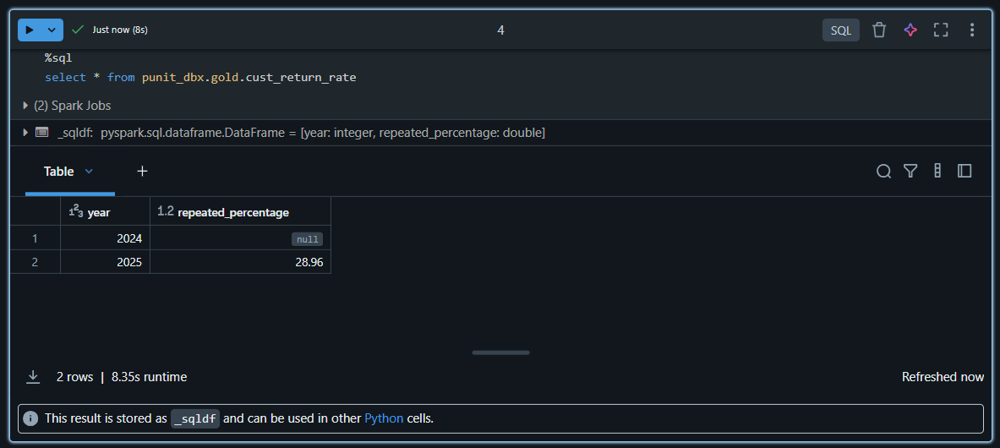
CREATE OR REPLACE TEMPORARY VIEW repeated_cust AS (
WITH cte AS (
SELECT DISTINCT
customer_id,
dd.year,
dd.month
FROM punit_dbx.silver.fact_orders_details AS fos
JOIN punit_dbx.silver.dim_date AS dd
ON fos.date_id = dd.date_id
),
cte2 AS (
SELECT *,
LAG(year) OVER (PARTITION BY customer_id ORDER BY year, month) AS lag_year,
LAG(month) OVER (PARTITION BY customer_id ORDER BY year, month) AS lag_month
FROM cte
)
SELECT * FROM cte2
WHERE
(year = lag_year AND month = lag_month + 1) OR
(year = lag_year + 1 AND lag_month = 12 AND month = 1)
);
-- Create temporary view for all unique customers per month
CREATE OR REPLACE TEMPORARY VIEW all_cust AS (
WITH cte AS (
SELECT DISTINCT
customer_id,
dd.year,
dd.month
FROM punit_dbx.silver.fact_orders_details AS fos
JOIN punit_dbx.silver.dim_date AS dd
ON fos.date_id = dd.date_id
)
SELECT * FROM cte
);
-- Create final table calculating monthly churn rate
CREATE OR REPLACE TABLE punit_dbx.gold.monthly_churn_rate AS (
WITH cte_cnt_repeated AS (
SELECT
year,
month,
COUNT(*) AS repeated_cnt
FROM repeated_cust
GROUP BY year, month
),
cte_cnt_all AS (
SELECT
year,
month,
COUNT(*) AS all_cnt
FROM all_cust
GROUP BY year, month
),
result_cte AS (
SELECT
cca.year,
cca.month,
ROUND((100 * COALESCE(ccr.repeated_cnt, 0)) / cca.all_cnt, 2) AS repeated_percentage
FROM cte_cnt_all AS cca
LEFT JOIN cte_cnt_repeated AS ccr
ON cca.year = ccr.year AND cca.month = ccr.month
)
SELECT
year,
month,
repeated_percentage,
ROUND((100 - repeated_percentage), 2) AS not_repeated
FROM result_cte
ORDER BY year, month
);
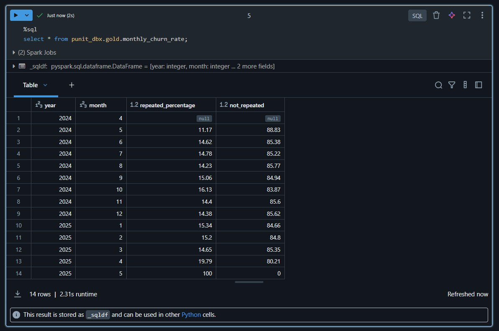
Purpose: Analyze product return patterns by brand
-- Create final table for product brand-wise order return rate
CREATE OR REPLACE TABLE punit_dbx.gold.order_return_rate AS (
WITH cte AS (
SELECT
product_brand_id,
SUM(CASE
WHEN LOWER(ods.order_status) IN ('cancelled', 'returned') THEN 1
ELSE 0
END) AS return_cnt,
SUM(CASE
WHEN LOWER(ods.order_status) = 'order' THEN 1
ELSE 0
END) AS final_sts_cnt
FROM punit_dbx.silver.fact_orders_details AS fos
JOIN dim_order_status AS ods
ON fos.order_status_id = ods.order_status_id
GROUP BY product_brand_id
)
SELECT
dpb.product_brand,
ROUND((return_cnt * 100.0 / final_sts_cnt), 2) AS return_rate
FROM cte
JOIN punit_dbx.silver.dim_product_brand AS dpb
ON cte.product_brand_id = dpb.product_brand_id
);
);
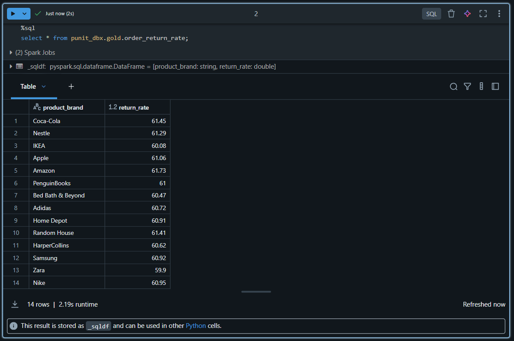
Purpose: Monitor product quality by category
-- Create table to calculate average product rating by category
CREATE OR REPLACE TABLE punit_dbx.gold.avg_rating_prod_category AS (
WITH cte AS (
SELECT DISTINCT
fos.transaction_id,
fos.product_category_id,
fos.product_id,
CASE
WHEN fd.rating IS NULL THEN 0
ELSE fd.rating
END AS rating
FROM punit_dbx.silver.fact_orders_details AS fos
JOIN punit_dbx.silver.dim_feedback AS fd
ON fos.feedback_id = fd.feedback_id
),
cte2 AS (
SELECT
product_category_id,
ROUND(AVG(rating), 3) AS avg_rate
FROM cte
GROUP BY product_category_id
)
SELECT
dpc.product_category,
avg_rate
FROM cte2
JOIN punit_dbx.silver.dim_product_category AS dpc
ON cte2.product_category_id = dpc.product_category_id
);
);
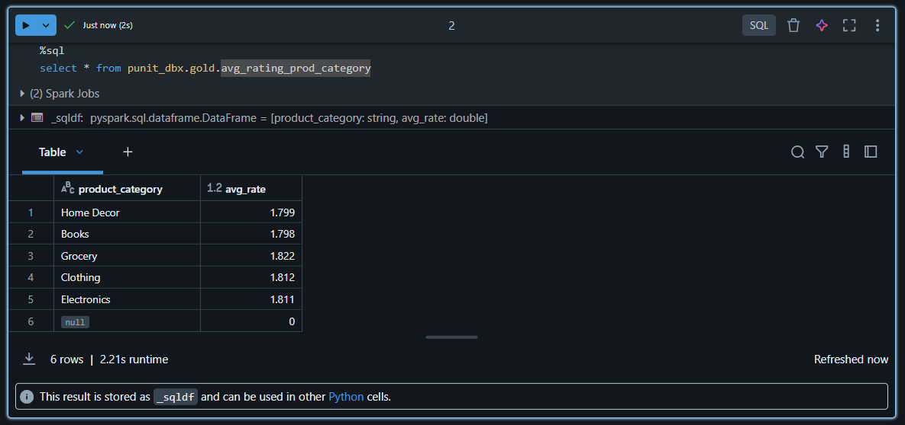
Purpose: Analyze payment method usage patterns
-- Create table to calculate frequency percentage of payment methods
CREATE OR REPLACE TABLE punit_dbx.gold.pay_method_freq AS (
WITH cte AS (
SELECT DISTINCT
fos.transaction_id,
fos.payment_method_id
FROM punit_dbx.silver.fact_orders_details AS fos
),
cte2 AS (
SELECT
payment_method_id,
COUNT(*) AS cnt
FROM cte
GROUP BY payment_method_id
),
cte3 AS (
SELECT
COUNT(DISTINCT transaction_id) AS cnt
FROM punit_dbx.silver.fact_orders_details
)
SELECT
cte2.payment_method_id,
dpm.payment_method,
ROUND(cte2.cnt * 100.0 / (SELECT cnt FROM cte3), 2) AS avg_rate
FROM cte2
JOIN punit_dbx.silver.dim_payment_method AS dpm
ON cte2.payment_method_id = dpm.payment_method_id
);
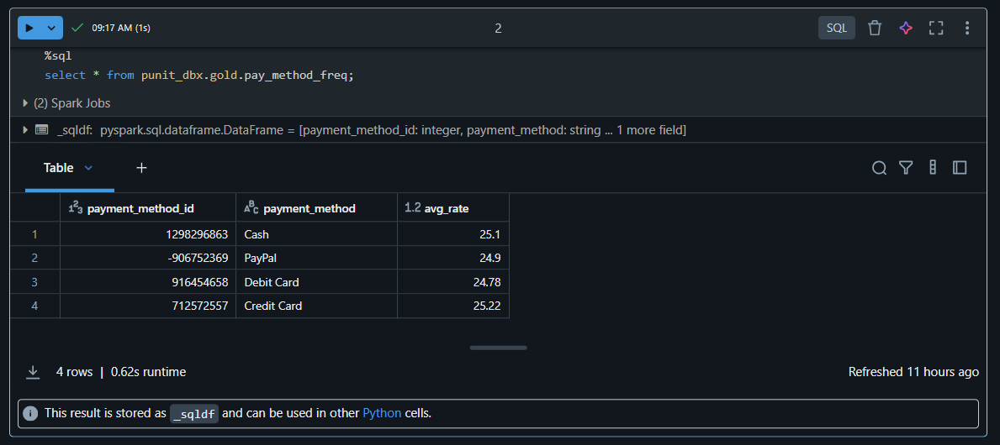
Purpose: Identify high-activity time periods
-- Create table to store the day with the highest number of products purchased
CREATE OR REPLACE TABLE punit_dbx.gold.most_product_purchase AS (
WITH cte AS (
SELECT
DATE(fos.datetimestamp) AS date_,
SUM(
CASE
WHEN quantity IS NULL THEN 1
ELSE FLOOR(quantity)
END
) AS total_product
FROM punit_dbx.silver.fact_orders_details AS fos
JOIN punit_dbx.silver.dim_order_status AS dos
ON fos.order_status_id = dos.order_status_id
AND LOWER(dos.order_status) = 'order'
GROUP BY DATE(fos.datetimestamp)
ORDER BY total_product DESC
LIMIT 1
)
SELECT
DAY(date_) AS day_num,
DATE_FORMAT(date_, 'EEEE') AS day_name,
MONTH(date_) AS month,
YEAR(date_) AS year,
total_product
FROM cte
);
);
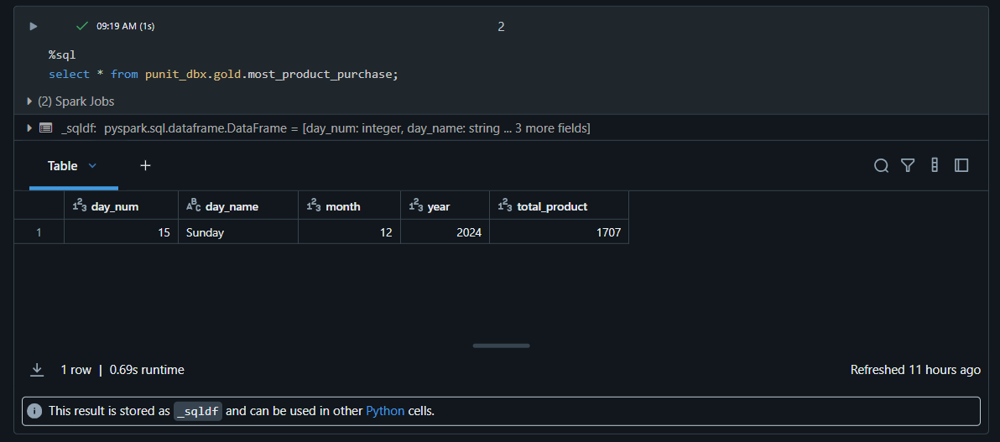
Purpose: Monitor shipping performance
-- Create table to calculate average shipping time per method by month
CREATE OR REPLACE TABLE punit_dbx.gold.avg_ship_time AS (
WITH order_cte AS (
SELECT
transaction_id,
customer_id,
shipping_method_id,
CASE
WHEN LOWER(dos.order_status) = 'order' THEN datetimestamp
ELSE NULL
END AS order_time
FROM punit_dbx.silver.fact_orders_details AS fos
INNER JOIN punit_dbx.silver.dim_order_status AS dos
ON fos.order_status_id = dos.order_status_id
),
deliver_cte AS (
SELECT
transaction_id,
customer_id,
shipping_method_id,
CASE
WHEN LOWER(dos.order_status) = 'delivered' THEN datetimestamp
ELSE NULL
END AS deliver_time
FROM punit_dbx.silver.fact_orders_details AS fos
INNER JOIN punit_dbx.silver.dim_order_status AS dos
ON fos.order_status_id = dos.order_status_id
),
cte3 AS (
SELECT
oc.*,
DATEDIFF(dc.deliver_time, oc.order_time) AS date_dif
FROM order_cte AS oc
JOIN deliver_cte AS dc
ON oc.transaction_id = dc.transaction_id
WHERE oc.order_time IS NOT NULL AND dc.deliver_time IS NOT NULL
ORDER BY oc.order_time
),
cte4 AS (
SELECT
MONTH(order_time) AS month_num,
DATE_FORMAT(order_time, 'MMMM') AS month,
YEAR(order_time) AS year,
shipping_method_id,
ROUND(AVG(date_dif), 2) AS avg_days -- average delivery duration
FROM cte3
GROUP BY
MONTH(order_time),
DATE_FORMAT(order_time, 'MMMM'),
YEAR(order_time),
shipping_method_id
ORDER BY year, month_num
)
SELECT
a.month,
a.year,
ds.shipping_method,
a.avg_days
FROM cte4 AS a
JOIN punit_dbx.silver.dim_shipping AS ds
ON a.shipping_method_id = ds.shipping_method_id
ORDER BY year, month_num, avg_days
);
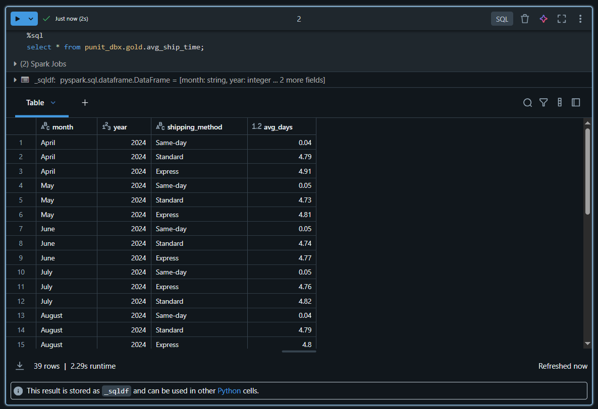
Purpose: Calculate revenue at risk from returns
-- Create table to identify customers with repeated purchases of the same product
CREATE OR REPLACE TABLE punit_dbx.gold.repeated_purchase_cust AS (
WITH cte AS (
SELECT DISTINCT
product_id,
customer_id,
transaction_id
FROM punit_dbx.silver.fact_orders_details
),
cte2 AS (
SELECT
customer_id,
product_id,
COUNT(*) AS orders
FROM cte
GROUP BY product_id, customer_id
HAVING COUNT(*) > 1
)
SELECT DISTINCT
cte2.customer_id,
dp.product_name,
cte2.orders
FROM cte2
JOIN punit_dbx.silver.dim_product AS dp
ON cte2.product_id = dp.product_id
);
);
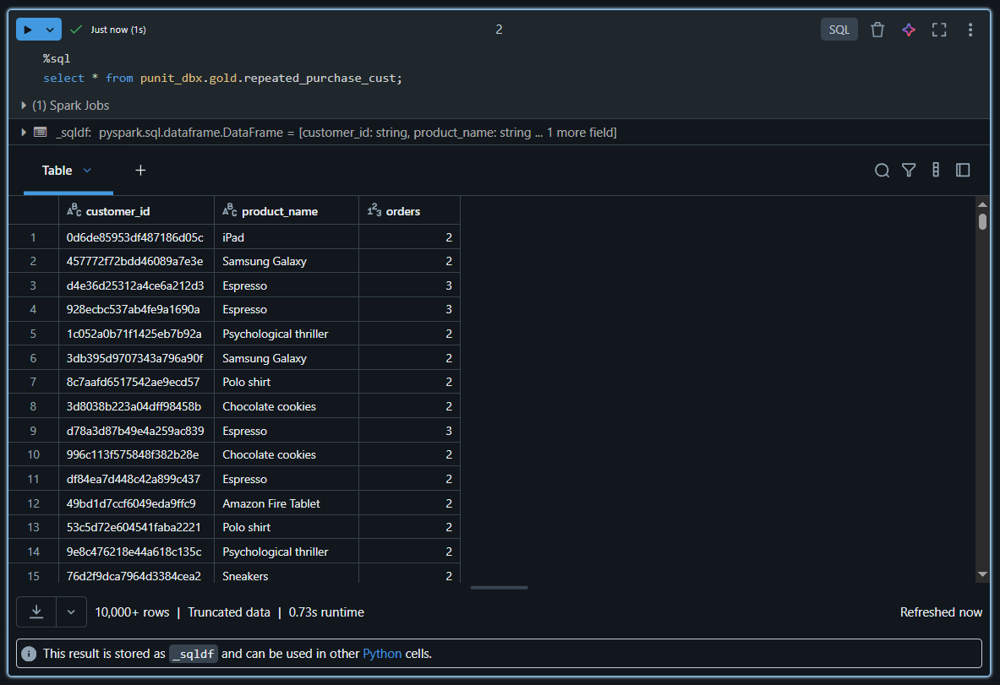
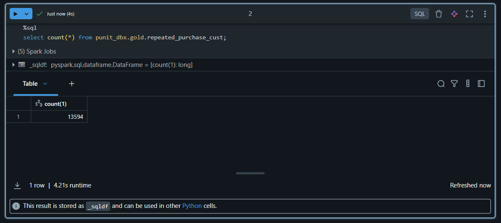
Purpose: Revenue contribution by product types across genders and age groups
-- Create fact view
-- Create table to calculate revenue lost due to returns by state and country
CREATE OR REPLACE TABLE punit_dbx.gold.risk_revanue_rate AS (
WITH cte AS (
SELECT
fos.*,
dp.amount,
CASE
WHEN fos.quantity IS NOT NULL THEN FLOOR(fos.quantity)
ELSE 1
END AS quantity_,
dos.order_status
FROM punit_dbx.silver.fact_orders_details AS fos
JOIN punit_dbx.silver.dim_product AS dp
ON fos.product_id = dp.product_id
JOIN punit_dbx.silver.dim_order_status AS dos
ON fos.order_status_id = dos.order_status_id
AND LOWER(dos.order_status) IN ('returned', 'delivered')
),
cte2 AS (
SELECT
dl.state_id,
dl.country_id,
SUM(
CASE
WHEN LOWER(c.order_status) = 'delivered' THEN amount * quantity_
ELSE 0
END
) AS total_price,
SUM(
CASE
WHEN LOWER(c.order_status) = 'returned' THEN amount * quantity_
ELSE 0
END
) AS return_price
FROM cte AS c
JOIN punit_dbx.silver.dim_location AS dl
ON dl.location_id = c.location_id
GROUP BY dl.state_id, dl.country_id
)
SELECT
ds.state,
dc.country,
total_price AS total_revenue,
return_price AS revenue_lost,
ROUND((100 * return_price) / (total_price + return_price), 2) AS revenue_risk_percentage
FROM cte2 AS c
JOIN punit_dbx.silver.dim_country AS dc
ON dc.country_id = c.country_id
JOIN punit_dbx.silver.dim_state AS ds
ON ds.state_id = c.state_id
);
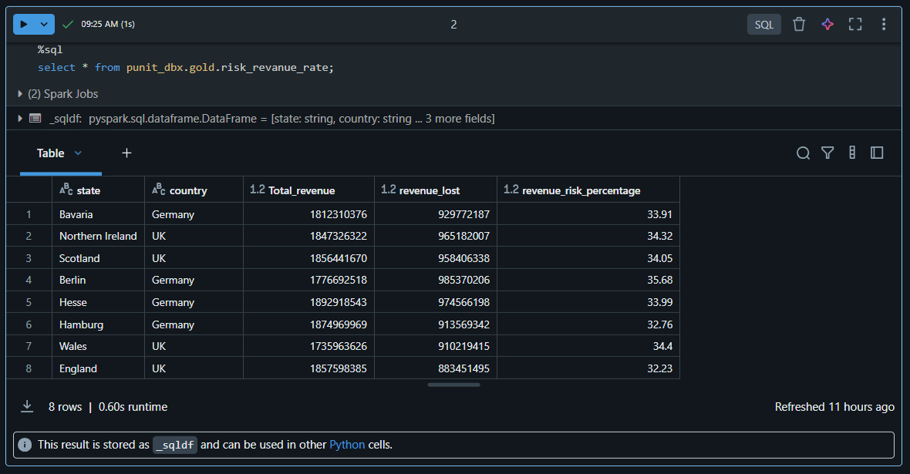
Purpose: Frequency of product purchases in 6-hour slots to understand peak shopping hours
-- Create table showing product purchase frequency by time slot of the day
CREATE OR REPLACE TABLE punit_dbx.gold.mst_prdct_prchs_freq_timeslot AS (
WITH cte AS (
SELECT DISTINCT
transaction_id,
product_id,
CASE
WHEN HOUR(datetimestamp) BETWEEN 0 AND 6 THEN '12 AM - 6 AM'
WHEN HOUR(datetimestamp) BETWEEN 6 AND 12 THEN '6 AM - 12 PM'
WHEN HOUR(datetimestamp) BETWEEN 12 AND 18 THEN '12 PM - 6 PM'
WHEN HOUR(datetimestamp) BETWEEN 18 AND 23 THEN '6 PM - 12 AM'
ELSE NULL
END AS timeslot
FROM punit_dbx.silver.fact_orders_details
WHERE datetimestamp IS NOT NULL
)
SELECT
timeslot AS TimeSlot,
COUNT(*) AS Frequency
FROM cte
GROUP BY timeslot
);
);
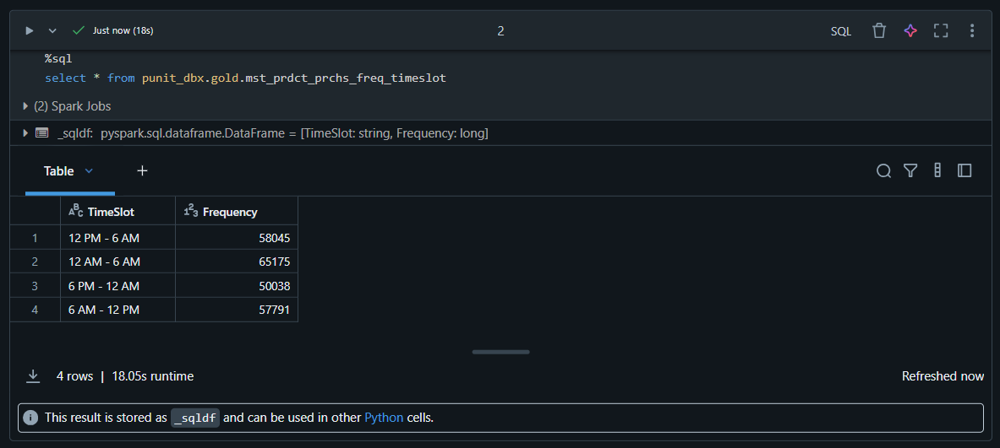
Purpose: Products with high loyalty where customers buy the same product multiple times
-- Create temporary view combining transaction, customer, product and age group details
CREATE OR REPLACE TEMPORARY VIEW fact_vw AS (
SELECT
a.transaction_id,
a.product_id,
a.datetimestamp,
a.birth_date,
b.order_status,
dc.customer_id,
dc.gender,
dp.product_name,
dp.amount,
CASE
WHEN a.quantity IS NOT NULL THEN FLOOR(a.quantity)
ELSE 1
END AS quantity_,
CASE
WHEN FLOOR(DATEDIFF(CURRENT_DATE(), TO_DATE(a.birth_date, 'dd/MM/yyyy')) / 365) BETWEEN 0 AND 12 THEN '0 - 12'
WHEN FLOOR(DATEDIFF(CURRENT_DATE(), TO_DATE(a.birth_date, 'dd/MM/yyyy')) / 365) BETWEEN 13 AND 20 THEN '13 - 20'
WHEN FLOOR(DATEDIFF(CURRENT_DATE(), TO_DATE(a.birth_date, 'dd/MM/yyyy')) / 365) BETWEEN 21 AND 35 THEN '21 - 35'
WHEN FLOOR(DATEDIFF(CURRENT_DATE(), TO_DATE(a.birth_date, 'dd/MM/yyyy')) / 365) BETWEEN 36 AND 50 THEN '36 - 50'
WHEN FLOOR(DATEDIFF(CURRENT_DATE(), TO_DATE(a.birth_date, 'dd/MM/yyyy')) / 365) > 50 THEN '50 and Above'
ELSE NULL
END AS age_grp
FROM punit_dbx.silver.fact_orders_details AS a
INNER JOIN punit_dbx.silver.dim_order_status AS b
ON a.order_status_id = b.order_status_id
AND LOWER(b.order_status) = 'order'
INNER JOIN punit_dbx.silver.dim_customer AS dc
ON a.customer_id = dc.customer_id
INNER JOIN punit_dbx.silver.dim_product AS dp
ON a.product_id = dp.product_id
AND a.datetimestamp BETWEEN dp.start_date AND dp.end_date
);
-- Creating Gold table: Revenue and Ratings by Age Group (excluding Returns/Cancellations)
CREATE OR REPLACE TABLE punit_dbx.gold.age_grp_revanue AS (
-- Step 1: Exclude returned or cancelled products
WITH cte AS (
SELECT DISTINCT *
FROM fact_vw AS t
LEFT ANTI JOIN (
SELECT DISTINCT transaction_id, product_id
FROM punit_dbx.silver.fact_orders_details AS a
INNER JOIN punit_dbx.silver.dim_order_status AS b
ON a.order_status_id = b.order_status_id
WHERE LOWER(b.order_status) IN ('returned', 'cancelled')
) AS r
ON t.transaction_id = r.transaction_id
AND t.product_id = r.product_id
),
-- Step 2: Join with feedback and compute total price and rating
cte2 AS (
SELECT
fos.*,
(fos.quantity_ * fos.amount) AS t_price,
COALESCE(df.rating, 0) AS rating_
FROM cte AS fos
INNER JOIN punit_dbx.silver.dim_feedback AS df
ON df.customer_id = fos.customer_id
AND df.product_id = fos.product_id
AND fos.datetimestamp BETWEEN df.start_date AND df.end_date
)
-- Step 3: Aggregate revenue and average ratings by product, gender, and age group
SELECT
product_name,
gender,
age_grp AS age_group,
ROUND(SUM(t_price), 3) AS total_revenue,
ROUND(AVG(rating_), 3) AS avg_ratings
FROM cte2
GROUP BY product_name, gender, age_grp
ORDER BY age_group, total_revenue
);
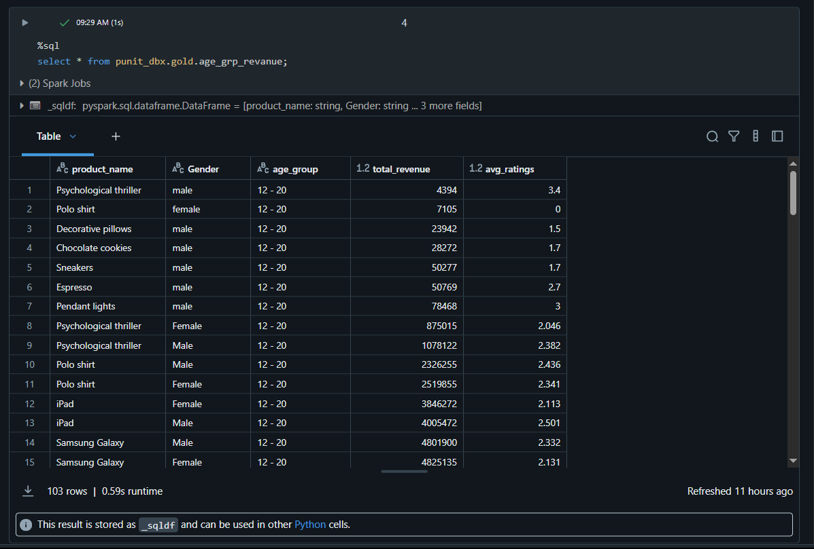
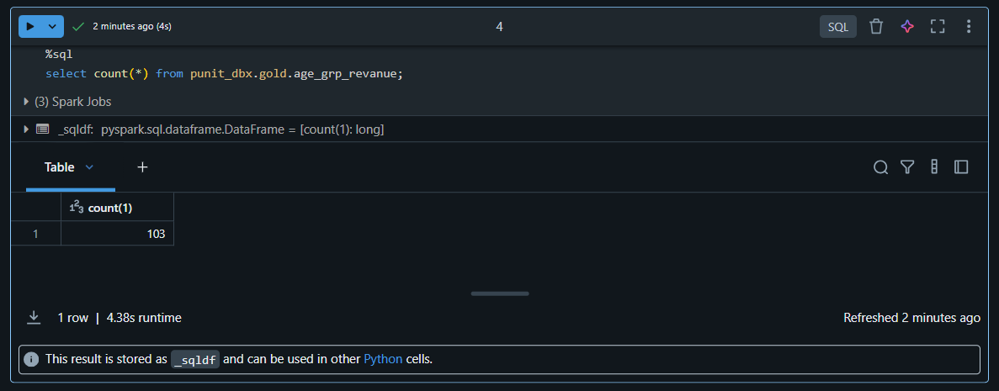
Purpose: Evaluate customer loyalty to specific brands through repeat purchases
-- Creating Gold table: Repeat Purchase Score per Product & Brand
CREATE OR REPLACE TABLE punit_dbx.gold.rept_prchs_score_prdct AS (
-- Step 1: Count product purchases per customer-brand combo
WITH cte AS (
SELECT
customer_id,
product_id,
product_brand_id,
COUNT(*) AS buy_count
FROM punit_dbx.silver.fact_orders_details
GROUP BY customer_id, product_id, product_brand_id
),
-- Step 2: Filter for repeat purchases (count > 1) and aggregate
repeat_cte AS (
SELECT
product_id,
product_brand_id,
SUM(buy_count) AS repeated_count,
COUNT(DISTINCT customer_id) AS cust_repeated
FROM cte
WHERE buy_count > 1
GROUP BY product_id, product_brand_id
),
-- Step 3: Get total purchase count per product-brand combo
all_cte AS (
SELECT
product_id,
product_brand_id,
SUM(buy_count) AS all_buy_count
FROM cte
GROUP BY product_id, product_brand_id
),
-- Step 4: Join repeated and total counts, compute repeat purchase percentage
result_cte AS (
SELECT
r.*,
ROUND((r.repeated_count * 100.0) / a.all_buy_count, 2) AS Repeat_Purchase_Percentage
FROM repeat_cte AS r
JOIN all_cte AS a
ON r.product_id = a.product_id
AND r.product_brand_id = a.product_brand_id
)
-- Step 5: Join with dimension tables for product and brand details
SELECT DISTINCT
dp.product_name,
dpb.product_brand,
rc.repeated_count,
rc.cust_repeated,
rc.Repeat_Purchase_Percentage
FROM result_cte AS rc
JOIN punit_dbx.silver.dim_product AS dp
ON rc.product_id = dp.product_id
JOIN punit_dbx.silver.dim_product_brand AS dpb
ON rc.product_brand_id = dpb.product_brand_id
);
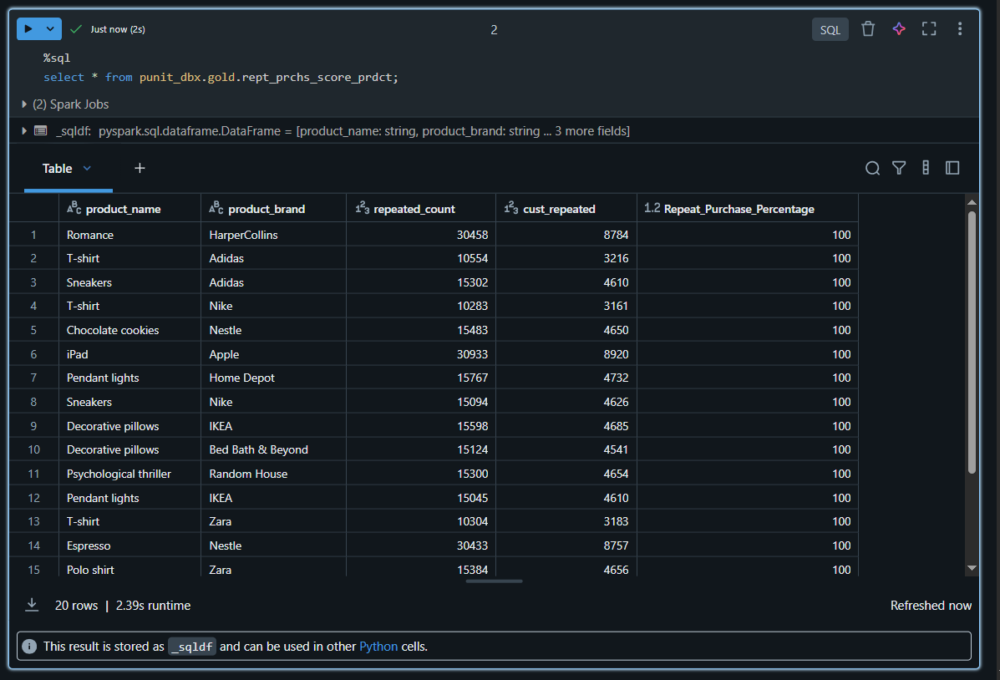
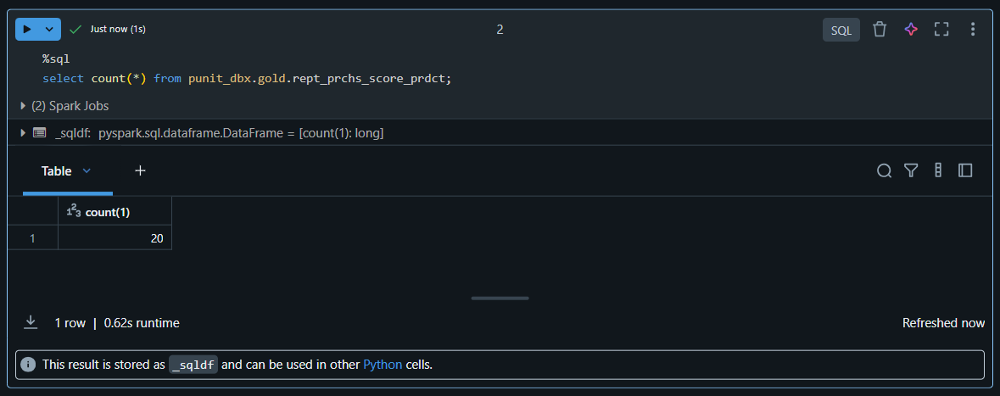
Purpose: Evaluates how loyal customers are to specific brands by calculating repeat purchases.
-- 📦 Creating Gold table: Brand Loyalty Score per Customer
CREATE OR REPLACE TABLE punit_dbx.gold.brnd_loyalty_scr AS (
WITH cte AS (
SELECT
fos.customer_id,
fos.product_brand_id,
COUNT(*) AS Repeated_Purchase_Count,
MAX(fos.datetimestamp) AS Last_Purchase_Date,
ROUND(
AVG(CASE
WHEN df.rating IS NULL THEN 0
ELSE df.rating
END),
2
) AS avg_rate
FROM punit_dbx.silver.fact_orders_details AS fos
JOIN punit_dbx.silver.dim_order_status AS dos
ON fos.order_status_id = dos.order_status_id
AND LOWER(dos.order_status) = 'order'
JOIN punit_dbx.silver.dim_feedback AS df
ON fos.feedback_id = df.feedback_id
AND fos.datetimestamp BETWEEN df.start_date AND df.end_date
GROUP BY
fos.customer_id,
fos.product_brand_id
)
SELECT
dpb.product_brand,
c.customer_id,
c.Repeated_Purchase_Count,
c.Last_Purchase_Date,
c.avg_rate
FROM cte AS c
JOIN punit_dbx.silver.dim_product_brand AS dpb
ON c.product_brand_id = dpb.product_brand_id
WHERE c.Repeated_Purchase_Count > 1
);
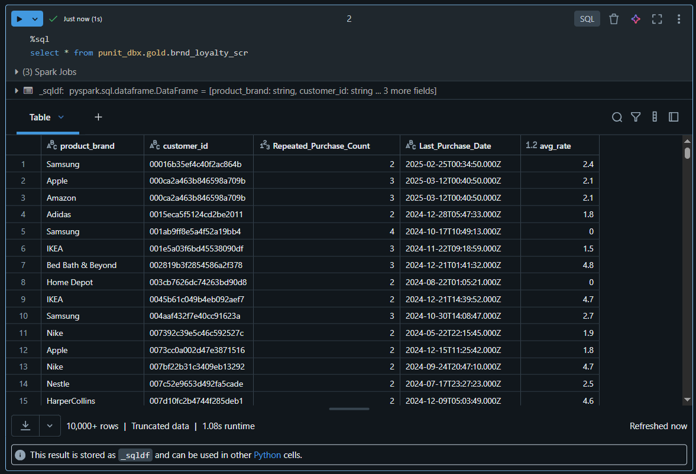
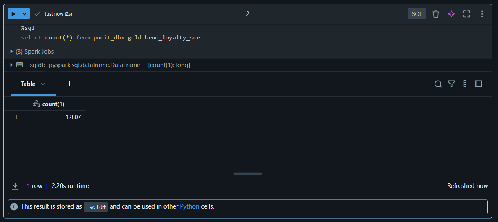